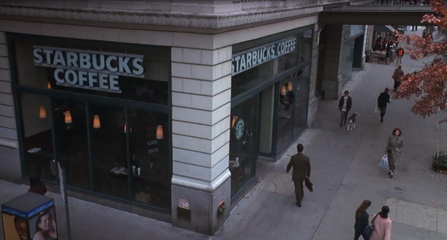

.png)
.PNG)
.PNG)
.PNG)
.PNG)
.PNG)
.JPG)
.JPG)
.PNG)
.PNG)


Delia Ephron (sister of Nora) said, “New York City is a character in You’ve Got Mail. Everyone thinks of it as big impersonal city, but the truth is in every neighborhood there’s an intimacy. This movie was a love letter to Manhattan and the Upper West side.” A number of year ago, some teacher friends and I spent some time in New York City taking a short course on teaching writing at Columbia University. Since we were going to be staying and working on the Upper West side, I wanted to see if we could find some of the sites from the movie. We either walked or took the subway to practically everywhere (but we did not see a butterfly inside the subway as Kathleen Kelly did.)
.png)
It seems like there was a Starbucks on every corner, and although we did get coffee from several of them, I do not know it if was the one pictured here and in the scene about decision making.

When they first started scouting film locations there was a large Barnes and Noble store in the area. They asked if they could use it for the set for Fox Books, but they would not let them. (I can understand why.) They found their building in the form of a Barney’s dept. store that had just closed due to bankruptcy.
The books used in the movie were all donated from publishers, and when filming was finished they in turn donated the books to charity.
One of the film sites we located there in the Upper West side was H and H Bagels.
It has since closed, also due to bankruptcy. There had been plans to open again in another location with a different name, but those plans have fallen through as of now.
Kathleen Kelly stops at a street vendor to buy a pumpkin and flowers in the movie. Every day when we would come out of our classes, there would be vendors on the sidewalks outside Columbia.
Do you remember the fall festival scene in the movie? If you look at the sign hanging there, it says “Columbia Grammar Fall Festival.” Columbia University has a grammar school that they work with in their education department. So the fictitious fall festival’s name was perhaps based on that school in the area.
And do you remember this scene with all the boats?
This is the 79th Street Boat Basin on the Hudson River. Here is another view of it at night.
This was one place I thought we could find. So one evening we started walking in the direction I believed it to be located. We walked and walked, and it began to get dark. We kept on walking…under bridge over passes…through areas that we were wondering if they were safe – fully expecting some man to jump out and get us. I kept insisting it just HAD to be the way. And then…after walking under some stone arches we found ourselves here…
It was the Boat Basin Cafe! And we walked right on through the bar and found this wonderful patio right outside.
Of course it was dark and late by then, and they had stopped serving. So we went back the next evening before dark and ate there overlooking the marina on the Hudson River. Here is a peek at their menu.
We were also lucky enough to dine at Cafe Lalo late one night. That was the film location for these scenes.
It is a charming restaurant that serves brunch daily until 4:00 p.m. and wonderful desserts all day. The original movie version of the story, The Shop Around the Corner, was set in Budapest (and had a very similar scene.) The directors felt that Cafe Lalo had the feel of a cafe in Budapest. Our table was almost where Meg Ryan is seated above. We enjoyed cheesecake and coffee the night we were there. Here is how it looks from the outside today. I remember it being much brighter inside than it was in the movie.
Here is part of their luscious menu. I seem to remember that we had a server from Georgia or somewhere in the south, and we were all so thrilled to find someone from our part of the country there. 🙂
The Thanksgiving scene where Kathleen did not have cash for the “cash only” line took place in Zabar’s.
We shopped there (with a credit card!) and I bought coffee.

In one scene in the movie, Kathleen and Joe are eating at an outside area of a restaurant. Do you see them there? It wasn’t until I was watching the movie again the other night, that I realized that we ate at that restaurant! I had my glasses on the other night to watch it, and I was finally able to read the signs. (Sad, huh?!)
This was Ocean Grill restaurant. The night we dined there, it was raining, so they did not have the blue signs out. We took a taxi that night because of the rain. Here are some photos of the beautiful interior.
and here is part of their menu.
Another place Joe and Kathleen ate was Gray’s Papaya – famous for their hotdogs and cheap prices.
 Here is Gray’s Papaya today
Here is Gray’s Papaya today

and part of their menu. You can see how inexpensive they are!

The exterior for Kathleen’s bookstore, The Shop Around the Corner was filmed in New York City.
Maya Schaper cheese and antique shop was redecorated to be Kathleen’s shop exterior, but the interior was filmed on a sound stage. The antique shop went out of business several years ago. Apparently the rent for that little building there on the West side, was $11,000 a month!
And last, but certainly not least, is Kathleen’s brownstone.
It is located at 328 West 89th street.
So now do you feel as if you have been living in the movie, You’ve Got Mail? 🙂 It was a lot of fun to find these places when we were there. By including so many real places, I think the director made us believe that the story actually could happen. I have one more place I want to show you from our New York City trip…saving that one for the next post.
Until next time…


.PNG)
One destination I want to go to is the park where they met. I found the address for it on line once. I am sure I could find it again.
——————————————————————–
I wish we had visited that park as well. I know it would have been lovely. Here is a link to its location if you would like it: http://youvegotmail.warnerbros.com/cmp/tour-garden.html
Kelly
Reading this post brought back many memories. I am a second grade teacher who also travelled to Columbia for their writing class. My colleague and I discovered Cafe Lalo and visited a couple of times to sample the sweets! Thanks for the reminder!
————————————————————————
I am so glad you were able to enjoy Café Lalo too, Connie. I wish we had something like that little café her in our town, or at least within driving distance.
Thank you for reading and leaving your comment. I appreciate it!
Kelly
Reading this post made me so “homesick” for my favorite city! Only been there twice but fell in with it. Just loved looking at all the sights and the people we met there were so friendly and nice–I was told not to expect that at all! The food was wonderful and I got to try hot chestnuts! I must watch YGM again soon and pay more attention to the details. When I flew home the last time, I remember looking out the plane and seeing The Lady of the Harbor and crying because I felt like I would never see her again. What a glorious view from the sky! I “heart” NYC! Thanks again for a wonderful trip!:)
———————————————————————-
Oh Louvina, I did not mean to make you homesick. 🙁 I must admit I did not see hot chestnuts anywhere…must have been the time of year we were there. You will go back, I am sure. Start planning that trip!(after your mountain trip to NC.)
Kelly
How FUN!! My husband’s father grew up on Long Island, so the hubby spent a lot of time up there growing up. Since I’m a Southern Girl, I did not…lol. When we started dating out first trip was to NYC. I had never been and was so overwhelmed! We actually stayed at The Plaza just a few months before it went condo. What an INCREDIBLE place that is!! My VERY favorite spot is The Oyster Bar in Grand Central Station. It IS New York to me. You need to check it. We go back every time we visit now.
———————————————————————-
Your first trip was to NYC and you stayed at the Plaza?!!!Oh my gooooodness. I will check out Grand Central Station’s Oyster Bar. Grand Central Station itself IS so New York.
Lucky girl you!
Kelly
I love this back drop information. It has made me want to go back and watch You’ve Got Mail again. I do own a DVD of the movie so I may to that this weekend.
Great post series, Kelly.
Karen
——————————————————————–
It is definitely one movie that I have watched over and over again…much to my family’s dismay! 🙂 Hope you will get to enjoy it again soon, Karen.
Thanks for reading the posts!
Kelly
I have thoroughly enjoyed your post. I love “You’ve Got Mail,” but even more, it was nice to read your personal reflections. I remember when the movie first came out I was watching “Regis & (probably Kathie Lee)” and they made a point of how well NYC came off in the movie. I’ve been to NYC @ Christmas and that is special but your post makes me want to go in Oct. Children’s literature is one of my all time favorite subjects and there was a bookstore in Austin TX called “Toad Hall” that was so much like Kathleen’s store. I’m not sure why it closed but I’ve always suspected it was because of the Barnes and Nobles of the world (not that I don’t enjoy their stores). “Gray’s Papaya” is in one of my other fav. movies – “Fools Rush In”. My parents’ home in Austin was in “Dazed and Confused” (definitely not a rom com). While the house was not the kind of star as many other movie houses, it was still exciting for us. My youngest daughter and her cousin even got to ride bikes in the background.
———————————————————————–
Wow! How exciting that your parents’ home was in a movie, and your daughter and niece got to be in the background, too! Love it! It would be fun to see how they make all the “movie magic.” I am sure it must be a sloooooow process to get it all right. And I love the name of the bookstore. How sad that it closed.
Glad you enjoyed the post!
Kelly
Thanks for sharing this Kelly…truly You’ve Got Mail is one of my favorite movies. And it is so true that NYC is a character in the movie. I always love seeing the REAL NYC. One day I hope to get there.
———————————————————————
I hope you get to visit there too, Arlene. I think if we had been going without someone who already knew their way around, I would have been more apprehensive. But we had someone with us, who had been there before and at least knew the subway system well. Overall, it was a great trip. There is sooooo much to see. If/When I go back, I want to shop at Fishs Eddy…although I am not sure how I would get home all the dishes I would want to buy there!
Kelly
What a great post! This must have been so much fun to “research”! This is another one of my favs…told you I need help! 😉
———————————————————————
The research for the trip was a lot of fun(especially knowing we would be going there,) and it was fun to revisit all the places again for the post. Glad you enjoyed it!
Kelly
Hi Kelly,
This was like a little vacation in a city that I know and love. So many places are incredibly familiar…and then there is the Boat Basin Café. How is it possible I have lived in the NYC metro area of 30 years and haven’t even HEARD of it? Sometimes it takes a fresh pair of eyes to see new things!
I saw You’ve Got Mail in the theater when it came out and haven’t seen it since…your post has inspired me to watch it tonight (and maybe discover some other hidden NYC gems).
Thanks for this post…I loved it! xoxo
———————————————————————
Oh my goodness! How is that you did not know about the Boat Basin Café?! You should check it out in person before it closes for the season(I believe they do that.) I am glad I could give you a little virtual vacation.
Kelly
You’ve Got Mail is one of my favorite movies! My kids bought it for me years ago so I could watch it over and over and see all the details…there are so many…pure eye candy! To go to New York in the fall (October for my birthday) is still on my bucket list! Thanks SO much for sharing this! LOVED it!
———————————————————————-
Yes! Go to NYC in the fall! That would be lovely. (My bucket list has being there to see the Macy’s Thanksgiving Day parade. :)) Happy early birthday to you!
Kelly
So charming to be wisked away to New York City this morning. Just loved this post. I feel so cozy and fall-y. Thank you for this!!
———————————————————————-
You are quite welcome, Barbara. Who would have ever thought NYC was charming?! You’ve Got Mail certainly gave us a different perspective of the big city.
Kelly
You’ve Got Mail is one of my favorite movies. How fun to go to the places that were actually in the movie. I would love to do that sometime! Thanks for sharing your experience!
———————————————————————
It certainly made for a fun trip to see all those places! If you go to New York City, you should add it to your list of things to do.
Kelly
Thanks for all this fun information. My great aunt was a graduate of Columbia many many years ago and always spoke so fondly of NYC. We have been twice. Once in 1984 and then again in 2004.
My college roommates and all our families were lucky enough to go to New York City together in 2004. We did what we called a Seinfeld show tour. My husband scouted out all the places that Jerry and Company visited. The high light for my boys was finding Tom’s Restaurant- the Restaurant where everyone hung out. We hopped in for a milk shake-we had heard they were the best, and they were.
New York is super exciting, and fun unless the computers are down at the airport and you miss your flight. My son is there an extra day for that reason and missing teaching his classes today!
One of my favorite scenes from the movie is when Kathleen is in Fox Books and knows more than the sales people! Go Kathleen!
Mary
From Virginia
———————————————————————–
A Seinfeld show tour…how fun!! And what lucky boys to go on such an adventure. 🙂 Terrible about your son missing his flight though. The only time I have had my luggage lost was a flight to New York…but we have never missed a flight. Loved that scene too where Kathleen has to rescue the sales person at Fox Books. I also love when Joe tells Kathleen that anyone who works in George’s department must have a PhD in children’s literature!
Kelly
A lot of “research” went into this post, so interesting. I’m going to watch the movie again, soon, and be on the lookout for all these wonderful places. What a lovely homage to New York City! (And with this morning feeling like fall has arrived it will be fun to watch the change of seasons in the movie, as well.)
———————————————————————
Yes, Paula, quite a bit of research! When you know all the places in the movie, it does change how you view it. It is like, “Oh…I know where THAT is. I’ve been there.” Makes it more fun to watch to me. Lucky you with a taste of fall! I will be glad when it arrives here. Seeing everyone decorating with pumpkins just doesn’t feel right to me yet. 🙂
Kelly
Wow Kelly, you sure did some scouting around. It sounds like something I would do, and my husband would roll his eyes. I especially loved the Boat Basin Cafe. Isn’t it awesome when you find a restaurant like that? So much great info on the movie. Thanks so much for sharing.
Have a great week.
Kristi
———————————————————————-
We did do a lot of scouting around, (and we went to classes too!) Your husband might roll his eyes, but he would have loved the food at some of these places. To find the Boat Basin Café was like uncovering a hidden treasure. You have no idea a restaurant is there inside this giant place made of limestone…truly a delight to walk into the rotunda and discover there is a restaurant there.
Kelly